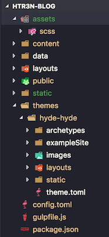
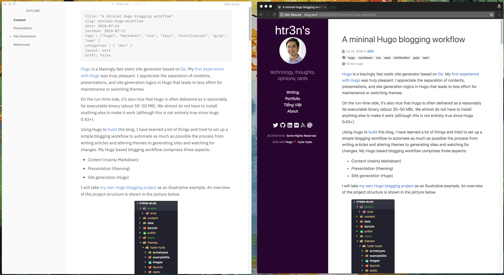

Hugo is a blazingly fast static site generator based on Go. My first experience with Hugo was truly pleasant. I appreciate the separation of contents, presentations, and site generation logics in Hugo that leads to less effort for maintenance or switching themes. On the run-time side, Hugo is delivered as a reasonably fat executable binary (about 30~50 MB). We almost do not have to install anything else to make it work.
Using Hugo to build this blog, I have learned a lot of things and tried to set up a simple blogging workflow to automate as much as possible the process from writing articles and altering themes to generating sites and watching for changes. My Hugo based blogging workflow comprises three aspects:
- Content (mainly Markdown)
- Presentation (theming)
- Site generation (Hugo)
I will take my own Hugo blogging project as an illustrative example. An overview of the project structure is shown in the picture below.

Some relevant project resources:
assets: my pre-processing resources (e.g. SASS, LESS, images, JavaScript).content: Markdown contentspublic: the Web sites generated by Hugostatic: resources (e.g. CSS, images, JavaScript) to be copied directly topublicby Hugo.themes: Hugo themes (here I use my own theme hyde-hyde)package.json: Node.js / NPM main configurationgulpfile.js: Gulp configuration
Content
Among many nice features, Hugo supports Markdown contents out-of-the-box. Thus I can keep writing blog posts with my favourite Markdown editors. I have tried a number of editors in macOS, ranging from simple plain text with preview add-ons like Sublime Text, TextMate, Atom, Visual Studio Code, Vim to some built-in ones like Bear, Byword, MacDown, Mou, Texts, IA Writer, Marked (only preview), Typora, to name but by no means completed. You can see here a list including most of Markdown editors available and here are some for macOS.
My first editor was Mou, due to its simplicity and highly customisable themes and rendering styles. Later on Mou’s developer decided to sell its ownership, then resumed working on its beta making the software status a bit unclear and frustrated. Tzu-ping Chung (@uranusjr) has created a similar editor, namely, MacDown, and open-sourced it. Then I started using MacDown with the existing Mou’s themes and styles.
I could not remember exactly when and how I found Typora but it never ceases to amaze me. With Typora, I can enjoy seamless editing and rendering in the same window, i.e., I can write Markdown normally and directly see the content rendered. Typora is still free in its beta phase and will become paid software when released. It has become my Markdown editor of choice and will be in future should its price tag is reasonable. For quick fixes, I use any editors at hand, for instance Visual Studio Code when working on a Hugo project.
Presentation
The nice thing is that a Hugo theme is a standalone component for decorating Hugo generated sites. Nevertheless, I can override a theme’s settings (e.g. layouts, styles) with my own versions with respect to Hugo lookup order. A theme contains resources for templating, layouting, and styling. Hugo’s templating and layouting have been discussed a lot around. Styling resources in a typical Hugo project can be found inside its theme’s static or the project root’s static and assets.
I used to work with CSS styles. After learning more about CSS preprocessors and attracted by the abstraction levels and tooling they provide, I decide to give a try and refactored my existing codebase to SCSS. Hence, my workflow should include support for SCSS (you might opt for LESS or Stylus but still can leverage a similar workflow with just right processing components).
Site Generation
Hugo will be main element that generates the final Web site taking input resources from content and presentation components. Until version 0.43, Hugo has not provided support for SASS. Hence, many have to develop their own ‘asset pipeline‘, i.e., incorporating preprocessors and post-processors with Hugo generation process.
Endogenous Pipeline
This approach, also called in-line pipeline, only works since Hugo v0.43/extended and later that supports processing SASS/CSS with consideration for minification, post-processing, and cache busting.
In Hugo templates, I can refer to SCSS files via page resources.
{{ $styles := resources.Get "scss/hyde-hyde.scss" | toCSS | postCSS (dict "use" "autoprefixer") | minify | fingerprint }}
<link rel="stylesheet" href="{{ $styles.Permalink }}" integrity="{{ $styles.Data.Integrity }}">
Note that Hugo will look for scss/hyde-hyde.scss in the project’s root and then the theme’s root, in that order.
Hugo retrieves the resource hyde-hyde.scss using Resources.Get, then transforms it into hyde-hyde.css and passes it to PostCSS for autoprefixing. After that, it minifies the CSS and generates a fingerprinted version. The second line simply links the resulting hyde-hyde.css with HTML via the variable $style. The result in the generated HTML will be like this.
<link rel="stylesheet" href="http://blog.test:1313/scss/hyde-hyde.4ff234ab46aa5302c7e0d2f35b9c76a8bba9fe42a9e8a6c7c47df7f85b8de122.css" integrity="sha256-T/I0q0aqUwLH4NLzW5x2qLup/kKp6KbHxH33+FuN4SI=">
The fingerprint code is for cache busting and only changed when the source file is altered.
NOTE: As I checked out this thread and tried on my project, Hugo’s extensions like
postCSS,minify, andfingerprintcould mess up CSS sourcemaps. If you need sourcemaps for developing and debugging, please ignore them and consider the exogenous pipeline.
The biggest advantage of in-line pipeline is that Hugo already provides a certain level of built-in support. Hugo’s live reload, i.e. serving the resulting sites live and automatically refreshing whenever there are changes of contents or themes, also works superbly for this case.
For many scenarios, we can use this approach instead of configuring complex tools like Gulp, Grunt, or Webpack. To be precise, I do need to install extra tools, which are postcss-cli and autoprefixer, for the aforementioned example to work and Hugo 0.43 extended version partially depends on Cgo/libc++.
$ npm i -g postcss-cli autoprefixer
Another downside to consider is that, in this way, external tools like postcss will slow down Hugo.
Exogenous Pipeline
When working on more complex asset pipelining, we have to involve external tools to build an exogenous asset pipeline. This is also my blogging workflow before Hugo v0.43. Now, I can mostly get rid of this exogenous pipeline. Here we will walk through this approach merely for the sake of completeness.
There are several ways to handle Web resources. For instance, Netlify provides a boilerplate project, namely, victor-hugo for starting a new Hugo project and preparing to deploy to its hosting. This boilerplate employs Gulp, Webpack, PostCSS, and Browsersync around Hugo. There are many developers rooting for Gulp [1,2,3,4,5] whilst some others go for Grunt [6] or Webpack [7,8]. And even few brave ones use pure NPM [9,10].
For starter projects with Hugo, you might want to consider some useful projects such as hugulp, Huggle, hugo-webpack-boilerplate. In my project, I combine Gulp with NPM and leverage some Gulp’s components for the asset pipeline.
- SASS/SCSS to CSS: a sensible choice is gulp-sass.
- Sourcemaps (optional): this is not mandatory but very handy for developing and debugging phase. I pick gulp-sourcemaps.
- Autoprefixing: it helps adding vendor-specific prefixes to CSS rules. We can use gulp-autoprefixer but be careful to combine with gulp-sourcemaps as it is currently broken. I decide to use gulp-postcss along with postcss-autoprefixer instead.
- Minification: PostCSS provides many plugins for CSS post-processing alongside autoprefixer. I choose cssnano to minify the CSSs.
$ npm i -D gulp gulp-sass gulp-postcss autoprefixer gulp-sourcemaps cssnano
In the same way, you can add more components to the list. Here I rather keep it short and simple for illustrative purpose. Now I start configuring Gulp to use them in my project.
I just simply invoke Gulp to trigger its chaining pipeline.
$ gulp
[19:28:57] Using gulpfile ~/working/dev/htr3n-blog/gulpfile.js
[19:28:57] Starting 'scss'...
[19:28:57] Finished 'scss' after 13 ms
[19:28:57] Starting 'watch'...
[19:28:57] Finished 'watch' after 26 ms
[19:28:57] Starting 'default'...
[19:28:57] Finished 'default' after 24 μs
Gulp will transform hyde-hyde.scss into hyde-hyde.css which is autoprefixed and saved in static/css along with its sourcemaps. In the Hugo templates, I refer to hyde-hyde.css normally.
<link rel="stylesheet" href="{{ .Site.BaseURL }}/css/hyde-hyde.css">
I can combine Gulp.watch() with Hugo’s live reload feature so that both will continuously monitors for changes and serve them instantly. This way, whenever I made any changes in a post in Typora, a SCSS/CSS file, or Go+HTML layout, I will instantly see the generated HTMLs.
$ hugo server -w --buildDrafts --cleanDestinationDir
| EN
+------------------+-----+
Pages | 320
Paginator pages | 0
Non-page files | 14
Static files | 14
Processed images | 0
Aliases | 0
Sitemaps | 1
Cleaned | 0
Total in 193 ms
Watching for changes in /Users/htr3n/working/dev/htr3n-blog/{assets,content,data,layouts,static,themes}
Watching for config changes in /Users/htr3n/working/dev/htr3n-blog/config.toml
Serving pages from memory
Running in Fast Render Mode. For full rebuilds on change: hugo server --disableFastRender
Web Server is available at http://localhost:1313/ (bind address 127.0.0.1)
Press Ctrl+C to stop
Please note that, by default, Hugo will only keep watching the following folders {assets,content,data,layouts,static,themes}. Hence, our SCSS files might not be in one of these folders but we must ensure the resources generated from Gulp are. As I illustrated endogenous pipeline above, my SCSSs are kept in assets such that Hugo Resources.Get can find them. If you opt for exogenous pipeline, you should put the preprocessing resources elsewhere.
After all, we can open the browser to http://localhost:1313 and enjoy the experience of live editing side-by-side.

At this point, we seem to miss cache busting which is provided in the endogenous pipeline with Hugo. This is the biggest advantage of using external tools as we need to magically establish the connections between Hugo generated resources and Gulp’s manipulated resources.
This task is a tad complicated as you can find here, here and here. In summary, the idea is to generate hash signatures for your CSS, for instance, using MD5 or SHA, store the relevant data as dictionary key-value pairs, e.g. "hyde-hyde.css" : "hyde-hyde.the-latest-hash-number.css", then use Hugo’s data templates feature to refer to those pairs.
Nevertheless, with Hugo v0.43 we can go around and utilise its features to complement Gulp on this matter (🐵). We just modify the Gulp configuration a bit so that the output folder is no longer static but assets/css as Hugo’s Resources.Get rather strictly looks for resources in assets.
var output_folder = 'assets/css';
And in the HTML, we use similar templates without toCSS and postCSS that are done with Gulp.
{{ $styles := resources.Get "css/hyde-hyde.css" | minify | fingerprint }}
<link rel="stylesheet" href="{{ $styles.Permalink }}" integrity="{{ $styles.Data.Integrity }}">
It looks like Gulp becomes redundant in this case as Hugo can perform toCSS, postCSS, and minify just fine. Nonetheless, in case you need other functionalities that are not yet provided with Hugo, Gulp will be what you should ask for. Besides, as per NOTE above, there are still some issues with Hugo’s extension regarding sourcemaps whilst Gulp’s asset pipeline works flawlessly.
More automation, please!!!
There are still two manual tasks for the exogenous pipeline, one for invoking Gulp and another one to start Hugo. Aiming to automate the workflow as much as possible, we can merge two tasks using one execution script, via NPM.
There are a number of options for running tasks concurrently in NPM including npm-run-all, npm-run-parallel, concurrently, or using background process if you are using Linux/macOS alike. Even Gulp also has some helper plugins like gulp-exec to execute child processes, gulp-nodemon to run in daemon mode, and Gulp 4.0+ has Gulp.parallel().
Let’s consider a simple example with npm-run-all. Other tools can be used similarly.
$ npm i -D npm-run-all
Then define some simple scripts in package.json for executing Gulp and Hugo.
Given no issues, we should execute npm run dev and see both Hugo and Gulp running in parallel.
References
- https://markus.oberlehner.net/blog/using-gulp-and-uncss-in-combination-with-sass-based-hugo-themes
- http://danbahrami.io/articles/building-a-production-website-with-hugo-and-gulp-js
- https://devotter.com/blog/using-gulp-with-hugo
- https://adamwills.io/blog/discovering-hugo-2-workflow
- http://www.sagarganatra.com/2016/12/building-your-static-site-with-hugo.html
- http://tjm.io/grunt-hugo
- https://byteplumbing.net/2017/08/static-asset-cache-busting-for-hugo
- https://tomodwyer.com/post/2017-10-22-hugo---webpack--%EF%B8%8F/
- http://thecodestead.com/post/how-to-use-npm-as-a-build-tool-with-hugo
- https://www.henriksommerfeld.se/build-steps-using-npm-scripts-for-my-hugo-blog